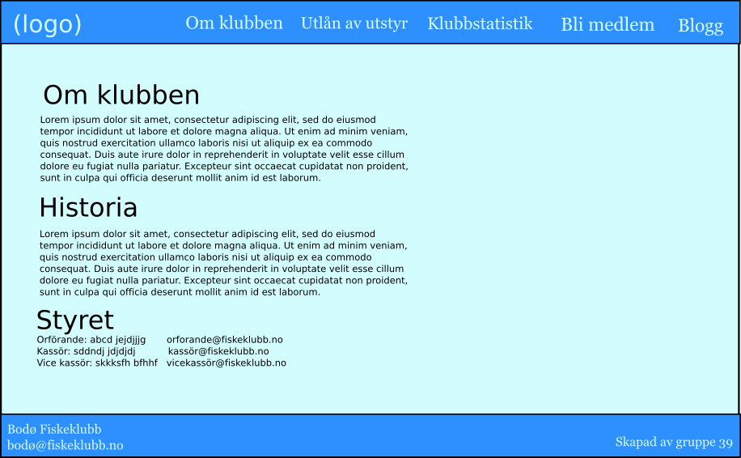
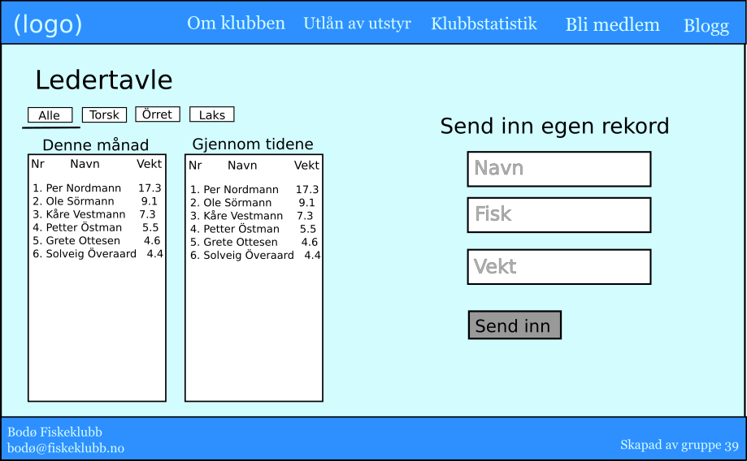
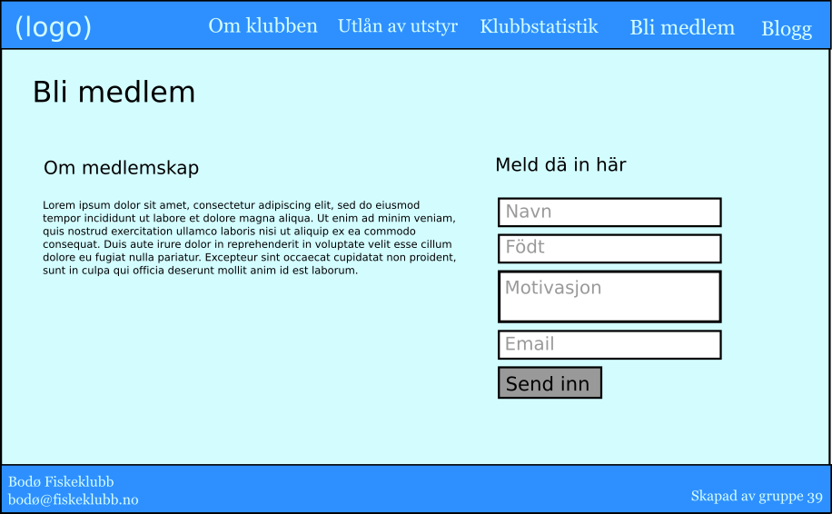
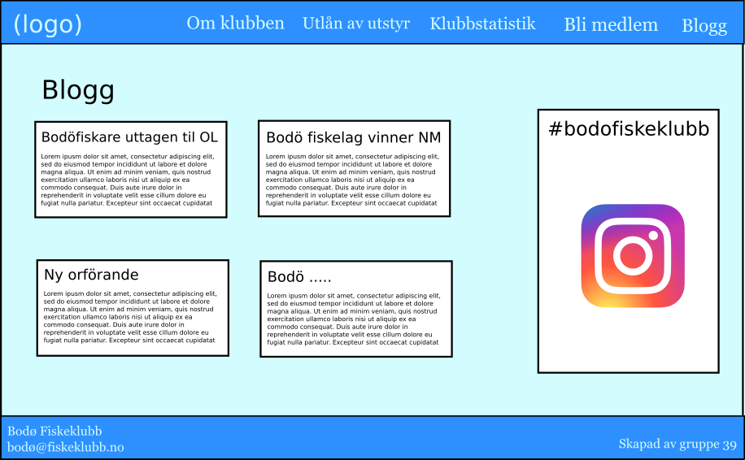

Endringer i innhold
Innholdet er fordelt (hovedsakelig) på seks temasider:
- Hjemmeside
Hjemmesiden vil være den første siden en bruker som besøker nettsiden vil se. Det viktigste formålet til hjemmesiden vil derfor være at brukeren får en oversikt over innholdet på nettstedet, og at de intuitivt kan navigere de ulike sidene og finne fram dit de vil. Hjemmesiden vil bestå av en stor logo for fiskeklubben, og Javascript vil brukes slik at logoen reagerer når musepekeren ligger over den. Nederst på siden vil det være en meny-bar med linker til de andre sidene på nettstedet. Siden vil ha et enkelt design, slik at brukeren ikke blir konfrontert med for mye informasjon for tidlig.

- Om klubben
Denne siden har som formål å gi brukeren informasjon om klubben. Dette inkluderer informasjon om klubben, dens historie og styrets medlemmer. Informasjonen om styrets medlemmer vil inneholde deres navn, rolle og kontaktinformasjon.
 - Utlån av utstyr
Denne siden har som formål å gi alle medlemmer sjanse å prøve på fiske uansett om man har eget utstyr eller ikke. Klubben ønsker at dette skal senke terskelen for å starte fiske og dermed øke interesse for fiske i Bodø. Siden vil inkludere informasjon om hvilke utstyr som kan lånes, bilde på utstyret og hvem man må kontakte for å låne utstyret.

- Klubbstatistikk
For fiskere med konkurranseinstinkt har nettsiden en ledertavle hvor brukere kan sende inn sine største fangst. Brukeren sender inn hvilken type fisk de fanget og hvor mye den veide og får melding om at resultatene må godkjennes. På høyre side siden er det to tabeller, en for månedens ledere og en for rekorder gjennom tidene. Over tabellene kan man velge hvilke typer fisk man ønsker å se tabeller over. Til venstre for disse tabellene er det tre felt hvor man kan fylle inn navn, type fisk og vekt for å sende inn egne rekorder. Når brukeren har sendt inn en rekord dukker det opp en melding øverst på nettleseren som leser “Din rekord er blitt sendt inn til godkjenning!”.
 - Fiskearter
Denne siden har som formål å gi brukeren nødvendig informasjon om ulike fiskearter som finnes i Bodø område og hvor de kan fanges. Siden skal være informativ og lett å bruke, på den måten blir det enklere for nyere fiskere å komme seg ut på tur uten å måtte legge inn alt for mye innsats rundt det tekniske
Siden inkluderer følgende informasjon over de ulike fiskeartene: illustrasjon, kjennetegn ved arten, gjennomsnittlig størrelse, anbefalt agn, (mer?). Størrelse og format av illustrasjonen vil være utformet slik at siden laster inn raskt.
I tillegg vil siden inneholde et kart nederst som viser markeringer med farge for hvor de ulike artene kan fanges. For områder der det kreves fiskekort vil dette også bli markert. Kart med denne interaktiviteten vil bli implementert ved hjelp av Javascript.

- Bli medlem
Klubben ønsker nye medlemmer, derfor skal det være enkelt å bli medlem. En side kalt "Bli medlem!" skal både gi informasjon om medlemskap, og gi besøkende et skjema hvor de lettvint kan fylle ut sin personalia, motivasjon ol. og bli kontaktet av klubbstyret for opptak til klubben. Tilbakemelding på innsendt skjema skal dukke opp ved hjelp av Javascript.
 - Blogg
For å skape engasjement i klubben skal siden ha en side hvor klubbstyret og medlemmer kan ytre seg. Denne er todelt: Blogg- og bilde-feed side ved side. Blogg-feeden inneholder nyhetssaker publisert av styret og innsendte blogginnlegg fra medlemmer, sortert etter dato. Bilde-feeden er et bildegalleri som henter de nyeste bildene fra klubbens Instagram-hashtag, typisk publisert av medlemmene fra sine private Instagramkontoer.
